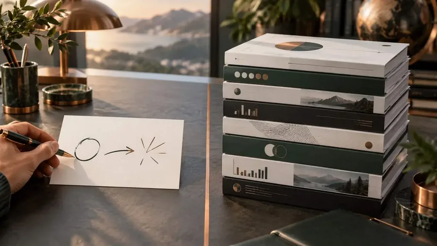
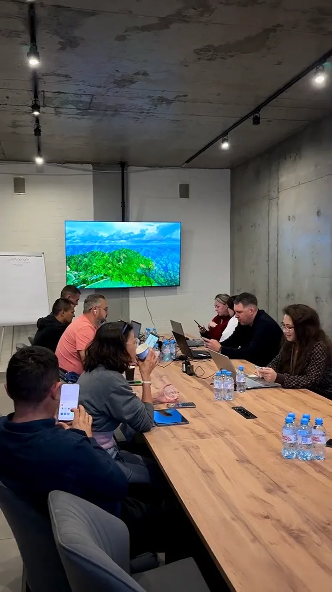
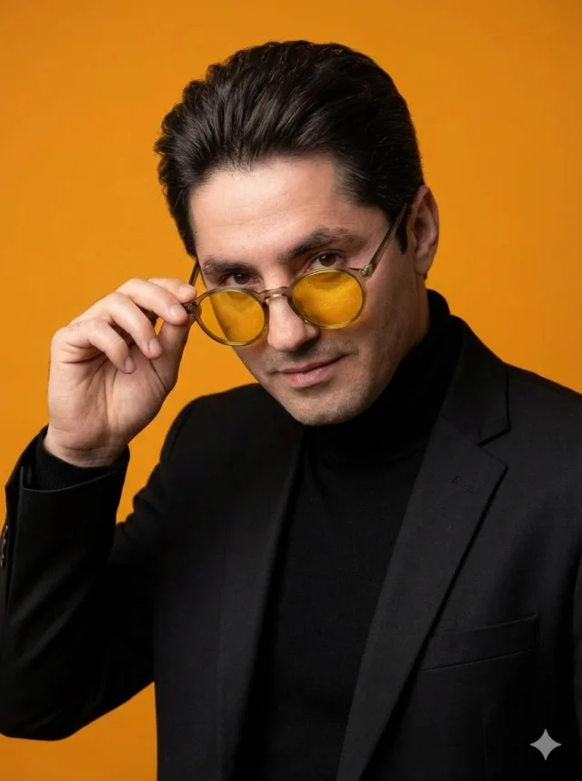
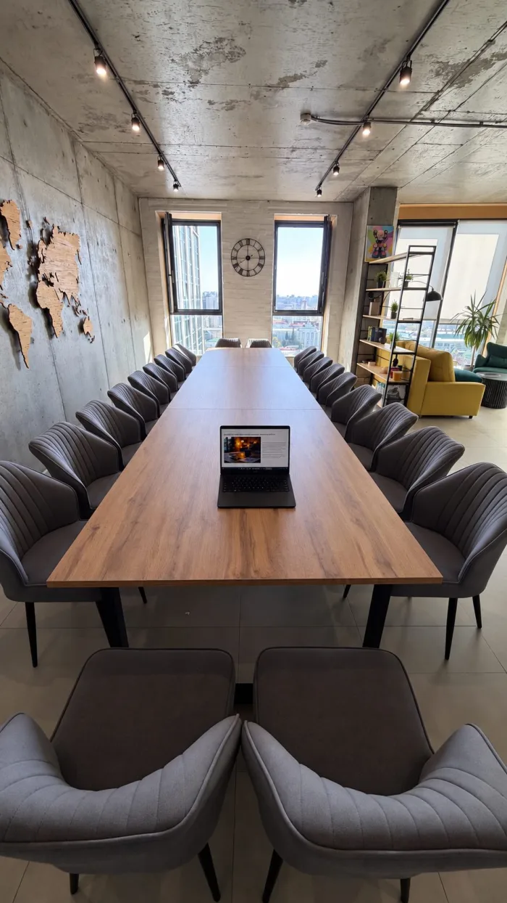

Видеть и слышать
Что можно узнать из записи разговора, фотографии или чертежа? Где модель различает важную деталь, а где ей нужна подсказка человека?
От личной эффективности
к автономности
Сегодня вы решаете задачи вместе с ИИ. Какие из них он уже может вести самостоятельно? И что это меняет в ваших планах на 2027 год?
Что выбрать для расшифровки встречи, анализа договора или исследования рынка? Разберём, какие нейросети подходят для каждой задачи и где проходят границы их возможностей.

Что можно узнать из записи разговора, фотографии или чертежа? Где модель различает важную деталь, а где ей нужна подсказка человека?
Как исследовать с ИИ спорный вопрос, проверить источники и разобраться, почему два отчёта дают разные ответы?
В какой момент ИИ можно доверить целое поручение и вернуться к нему, когда готовы материалы для решения?
Вы задаёте направление разговора, просите объяснить сложное, возвращаетесь к слабому месту. ИИ помогает быстрее разобраться в вопросе.
У задачи появляется история. Ассистент подхватывает работу с того места, где вы остановились, удерживает условия и помогает сравнить варианты.
Вы определяете цель и границы. Агент планирует шаги, обращается к доступным источникам и возвращается к вам, когда нужно принять решение.
К утру нужно понять, стоит ли выходить на новый рынок. Посмотрите, как меняется ваша часть работы в каждом режиме.
Вы выбираете источники и критерии сравнения. Ассистент помогает сопоставить отчёты, найти расхождения и сформулировать вопросы для дальнейшей проверки.
Какую гипотезу проверить следующей?
Агент намечает план, ищет открытые данные о спросе и конкурентах, сравнивает их и даёт ссылки на источники. Пробелы в данных отмечает отдельно.
Достаточно ли оснований для пробного запуска?
Разберёмся, как устроены языковые и мультимодальные модели, для каких задач они подходят и где результат требует проверки специалистом.
Увидите, как из одной цели появляется план действий. Проследим за работой агента и разберём, в каких точках необходимо решение человека.
Обсудим возможные перемены в работе и повседневной жизни. Выберете, какие возможности осваивать сейчас и за какими изменениями следить в течение года.
Настроите помощника под свою работу. Научитесь общаться с нейросетью так, чтобы она учитывала вашу ситуацию и давала ответы нужной глубины. Сможете уточняющими вопросами раскрыть детали, сравнить варианты и получить аргументы для решения.
Если ИИ сможет часами выполнять поручение в фоновом режиме, что изменится в вашем рабочем дне? Разберём, какие решения уже имеет смысл пересмотреть и что должно произойти, чтобы следующий шаг себя оправдал.
Сопоставим направления развития ИИ с вашими планами. Где вы выиграете от раннего старта? Где разумнее дождаться более надёжных решений?
Когда ИИ может подготовить и сравнить варианты, на каких решениях стоит сосредоточиться вам?
Какие поручения вы готовы доверить личному агенту? В какой момент он должен остановиться и спросить вашего согласия?
Вы обозначаете цель в двух фразах. Помощник уже знает, для кого вы работаете, что для вас важно и в каком виде нужен результат. Когда данных мало, он уточняет детали. На встрече вы настроите такого помощника под себя.

Зададите ему роль, привычный стиль работы и критерии качества. Посмотрите, как меняется ответ, когда за короткой просьбой стоит знание вашей работы.
Научитесь задавать направление беседе и замечать, когда ответ уходит в сторону. На практике подберёте уточняющие вопросы, которые помогают проверить выводы и довести ответ до нужной глубины.

Автор методики «ИИ-мышление» и программ «AI Цех» и «ИИ. Новая реальность».
На корпоративных программах команды осваивают ИИ на своих рабочих задачах.
Вместе с командой внедряет ИИ в компаниях — от отдельных рабочих операций до агентных систем.
Автор и ведущий рубрики «ИИ. Новая реальность» на радио «Комсомольская правда» в Уфе. Приглашённый эксперт по ИИ на телевидении.

ИИ. Новая реальность
От личной эффективности к автономности